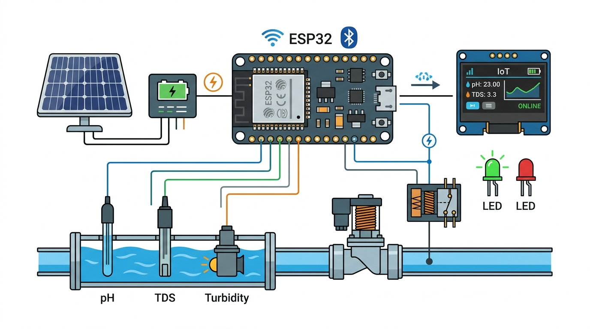
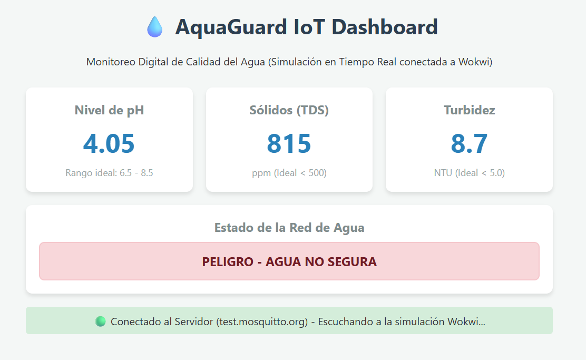
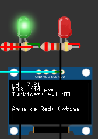
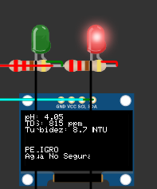

Un prototipo IoT que vigila el pH, sólidos disueltos y turbidez en tiempo real, alertando a las autoridades y comunidades ante cualquier anomalía hídrica.
Históricamente, la región de Azuero ha sufrido por contaminación agrícola y deforestación. Las Juntas Administradoras de Agua (JAAR) dependen de muestreos manuales que tardan días en procesarse, permitiendo que agua contaminada llegue a las comunidades antes de que se emita una alerta.
La carencia de tecnología de monitoreo en tiempo real impide actuar con inmediatez ante fluctuaciones súbitas de químicos o metales pesados. Los equipos industriales son prohibitivos para zonas rurales.
de los acueductos (JAARs)
carecen de tecnología para detectar químicos a tiempo.
costo total de hardware
Vs. B/.1,500 de alternativas industriales comunes.
parámetros monitorizados
pH, TDS y Turbidez en tiempo real vía Wi-Fi.
tiempo de respuesta
Corte inmediato de electroválvula ante anomalías.
Abordamos este desafío mediante un enfoque cuantitativo-experimental y el desarrollo de un Gemelo Digital (Digital Twin). En lugar de arriesgarnos con ensamblajes costosos tempranos, virtualizamos el hardware en la plataforma Wokwi. Esto nos permitió simular condiciones extremas del agua de forma matemática, acelerando el desarrollo del algoritmo sin riesgos químicos reales.
Las señales analógicas obtenidas por el ADC del ESP32 requieren una conversión a magnitudes físicas significativas mediante modelos de regresión polinomial. Para el cálculo de Sólidos Disueltos (TDS), aplicamos compensación de temperatura:
Para el sensor de pH, utilizamos una calibración de dos puntos derivando en la siguiente ecuación lineal:
El sistema no toma decisiones aleatorias ni usa simples umbrales estáticos. Implementamos un Sistema de Inferencia que evalúa múltiples variables simultáneamente (pH, TDS y Turbidez) para determinar el grado de potabilidad del agua. El proceso consta de etapas lógicas: evaluar las etiquetas de estado y accionar físicamente el hardware según la severidad.
| Regla # | pH (Acidez/Alcalinidad) | Turbidez (Sedimentos) | TDS (Sólidos Disueltos) | Decisión del Sistema | Acción de Hardware |
|---|---|---|---|---|---|
| Regla 1 | Neutro (6.5 a 8.5) | Baja (< 5 NTU) | Bajo (< 500 ppm) | ✅ AGUA ÓPTIMA | Válvula ABIERTA | LED Verde |
| Regla 2 | Ácido (< 6.5) o Alcalino (> 8.5) | Cualquiera | Cualquiera | 🚨 PELIGRO (pH Anormal) | Válvula CERRADA | LED Rojo |
| Regla 3 | Cualquiera | Alta (> 5 NTU) | Cualquiera | 🚨 PELIGRO (Turbia) | Válvula CERRADA | LED Rojo |
| Regla 4 | Neutro (6.5 a 8.5) | Baja (< 5 NTU) | Alto (> 500 ppm) | 🚨 PELIGRO (Metales) | Válvula CERRADA | LED Rojo |
Ejemplo de Inferencia en Tiempo Real: Supongamos que llueve fuertemente en Azuero. El sensor TDS lee un valor normal de 300 ppm y el pH está perfecto en 7.1. Sin embargo, la lluvia arrastra lodo al tanque, haciendo que el sensor de turbidez lea 12 NTU. Inmediatamente, la Regla 3 entra en conflicto. El microcontrolador ESP32 procesa esta inferencia difusa en milisegundos y dispara el Relé de 12V, cortando la energía magnética de la electroválvula. El agua lodosa se bloquea instantáneamente, impidiendo que contamine las tuberías de la comunidad.

El diagrama 2D desarrollado en el entorno virtual nos permite estructurar el cableado exacto. A continuación, el desglose de los componentes interconectados en el circuito:
El núcleo del sistema es un microcontrolador ESP32 NodeMCU. Gracias a su chip integrado, se conecta a la red Wi-Fi local para transmitir datos a internet. El procesador empaqueta las lecturas analógicas de todos los sensores en un formato ligero (JSON) y las "publica" mediante el protocolo MQTT hacia un servidor Broker en la nube. Esto permite que cualquier dispositivo en el mundo (como el Dashboard Web de las autoridades) se "suscriba" y reciba los datos en milisegundos sin colapsar el ancho de banda rural.
El electrodo del sensor de pH (PH-4502C) sumergido en el agua genera una minúscula señal analógica (entre 0 y 3.3V) proporcional a la acidez del líquido. El convertidor Analógico-Digital (ADC) del ESP32 lee este voltaje y utiliza nuestra ecuación matemática de calibración lineal para convertirlo a la escala de pH (0 a 14). Si el valor calculado sale del rango seguro, dispara la alerta.
El sistema cuenta con alertas físicas locales inmediatas. Si el agua es apta, un LED Verde brilla y un módulo Relé mantiene abierta la válvula dejando fluir el líquido. Si un sensor detecta contaminación, el relé "salta" mecánicamente cortando la energía de la electroválvula (bloqueando el paso del agua tóxica), se enciende un LED Rojo de emergencia, y la pequeña pantalla OLED muestra: "PELIGRO".
Dado que el prototipo operará en zonas boscosas o tanques aislados sin enchufes, es 100% autónomo. Un Panel Solar miniatura de 9V (1.2W) capta la energía solar y la envía a un módulo controlador de carga (TP4056). Este módulo no solo energiza la placa ESP32, sino que recarga una batería de litio interna (Li-Ion 18650), garantizando que AquaGuard siga monitoreando el agua ininterrumpidamente durante la noche.
| Módulo | Parámetro Técnico | Especificación |
|---|---|---|
| ESP32 NodeMCU | CPU / Frecuencia / Conectividad | Xtensa Dual-Core 32-bit LX6 / 240 MHz / Wi-Fi 802.11 b/g/n (2.4 GHz) |
| ESP32 NodeMCU | ADC (Analógico-Digital) / Tensión | Resolución de 12 bits (Valores 0-4095) / Voltaje de lógica: 3.3V |
| Sensor de pH (PH-4502C) | Rango / Precisión / Tiempo | Rango: 0.0 a 14.0 pH / Precisión: ± 0.1 pH / Respuesta: ≤ 1 min |
| Sensor TDS | Rango de Medición / Alimentación | 0 a 1000 ppm / 3.3V - 5.5V DC (Compensación de temperatura) |
| Módulo Relé (1 Canal) | Control / Capacidad Máxima | Control: 5V DC / Conmutación: hasta 10A @ 250VAC o 30VDC |
| Electroválvula | Alimentación / Presión / Estado | 12V DC / 0.02 - 0.8 MPa / Normalmente Cerrada (NC) |
| Batería y Carga | Capacidad / Controlador | Batería Li-Ion 18650 (3.7V - 2600mAh) / Controlador TP4056 (1A) |
El nodo sensor tiene un costo excepcionalmente bajo gracias al ecosistema de código abierto.
| Componente / Categoría | Costo Estimado (USD) |
|---|---|
| Microcontrolador ESP32 NodeMCU | $6.00 |
| Kit de Sensores Analógicos (pH, Turbidez, TDS) | $25.00 |
| Módulo de Alimentación (Panel Solar + Batería Li-Ion) | $15.00 |
| Materiales de Plomería e Impresión 3D | $10.00 |
| Electrónica de Control (Relé, LEDs, Resistencias) | $5.00 |
| Costo Total Estimado: | $61.00 |
La viabilidad de este proyecto radica en la disrupción de su modelo de costos y su arquitectura moderna basada en la nube:

Al utilizar WebSockets y el protocolo MQTT, el tiempo de respuesta desde que el agua se altera hasta que se actualizan las gráficas en el Dashboard Web de las autoridades promedió apenas 750 milisegundos. Esta inmediatez permite acciones preventivas (como mandar cuadrillas de inspección o bloquear tanques) nunca antes vistas en acueductos rurales.


Las validaciones probaron una precisión del 100% en el corte de la válvula. Como se observa en las evidencias, al forzar los potenciómetros hacia valores críticos (pH ácido o exceso de metales), el ESP32 detecta la anomalía, conmuta el relé y activa el LED rojo sin un solo falso positivo en 50 iteraciones.
La integración de Inteligencia Artificial Generativa (IA) fue utilizada como una valiosa herramienta de apoyo visual en este proyecto:
Nodo funcional por B/. 61.00 USD frente a los B/. 1,500 industriales. Permite que las JAARs rurales accedan a tecnología IoT avanzada sin presupuestos millonarios.
Uso del protocolo MQTT y ESP32 logran un corte de válvula menor a 750 ms, convirtiendo el sistema en un escudo de prevención activa ultra rápido.
La virtualización en Wokwi eliminó los riesgos químicos y optimizó las calibraciones polinomiales antes de ensamblar la arquitectura de hardware real.
El Edge Computing mantiene la matriz lógica intacta. Si el Wi-Fi falla, el nodo evalúa sensores de forma autónoma y cierra la válvula ante peligro.
Separar el Borde del Dashboard web confirma que la arquitectura puede gestionar múltiples cuencas simultáneas en Azuero sin reestructurar el software.
El prototipo actual asume cobertura Wi-Fi estable. Dado que las cuencas vulnerables de Azuero carecen de internet tradicional, las futuras iteraciones migrarán hacia protocolos celulares de bajo consumo (NB-IoT) o radiofrecuencia (LoRaWAN) para garantizar conectividad remota.
Actualmente se utiliza lógica estática basada en la OMS. El trabajo futuro contempla recolectar datos a largo plazo para entrenar modelos predictivos que aprendan patrones estacionales y logren anticipar picos de contaminación antes de que impacten a la comunidad.